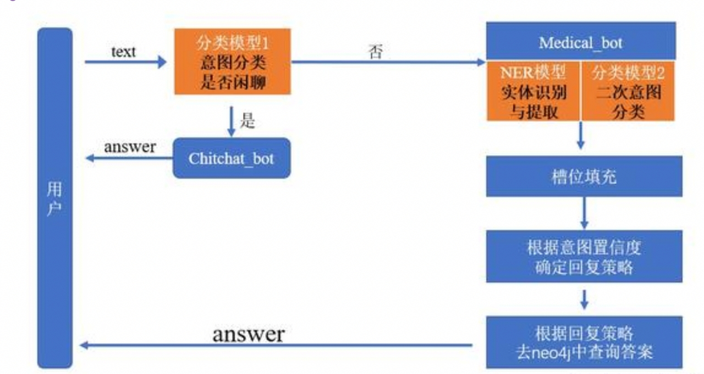

医疗KBQA系统实现¶
学习目标¶
- 了解KBQA系统的工作流程
- 掌握KBQA系统中意图分类原理和代码实现
- 掌握KBQA系统中槽位填充原理和代码实现
- 掌握KBQA系统中对话管理代码的实现
系统架构¶
下图为本次项目中，基于医疗知识图谱实现智能问答系统的流程框架（其属于任务型对话机器人），其主要环节依然包括三部分：NLU（自然语言理解），DM（对话管理），NLG（自然语言生成）。
- 
KBQA问答系统实现步骤：¶
- NLU模块
- 实现第一个意图识别模型：判断是否是闲聊类的意图
- 实现第二个意图识别模型：包括13个医疗类的意图
- 实现第三个槽位填充（NER）模型：这里直接使用NER任务模型
- DM模块
- 基于不同意图，设计对应的语义槽
- 主逻辑服务模块实现
- 设计整个对话逻辑
NLU模块¶
第一个意图识别模型：¶
-
目的：判断是否是闲聊类的意图
-
共支持6种类型：greet、goodbye、deny、isbot、accept、 diagnosis
- 命中前四个意图，那就进入Chitchat_bot，从准备好的回复语料中随机抽取一条返回给用户，对话结束； - 命中accept，accept意图是在进行**问题澄清**时发挥作用； - 命中diagnosis，进入Medical_bot；
-
- 具体代码：
- 代码位置：./MedicalKB/NLU/sklearn_Classification
- 实现步骤：
- 查看数据
- 训练模型及保存
- 模型加载重利用
-
查看数据
- 数据存储位置：./MedicalKB/NLU/Chatty_intention/data/train.txt
-
示例
你好呀,greet 再见,goodbye 你错了,deny 你是谁,isbot 可以,accept 这个病可以预防吗,diagnosistrain.txt一共包含：208行数据，分为两列；第一列为原始文本；第二列为意图类别。
-
训练模型及保存
- 脚本位置及名称：./NLP/MedicalKB/NLU/Chatty_intention/train.py
-
具体代码
# -*- coding:utf-8 -*- import os import pickle import random import numpy as np from sklearn import svm from sklearn.linear_model import LogisticRegression from sklearn.ensemble import GradientBoostingClassifier from sklearn.feature_extraction.text import CountVectorizer, TfidfVectorizer from sklearn.metrics import f1_score from sklearn.metrics import classification_report, confusion_matrix from sklearn.model_selection import train_test_split seed = 222 random.seed(seed) np.random.seed(seed) def load_data(data_path): X,y = [],[] with open(data_path,'r',encoding='utf8') as f: for line in f.readlines(): text, label = line.strip().split(',') text = ' '.join(list(text.lower())) X.append(text) y.append(label) index = np.arange(len(X)) np.random.shuffle(index) X = [X[i] for i in index] y = [y[i] for i in index] return X,y def run(data_path, model_save_path): X,y = load_data(data_path) label_set = sorted(list(set(y))) label2id = {label: idx for idx,label in enumerate(label_set)} id2label = {idx: label for label,idx in label2id.items()} y = [label2id[i] for i in y] label_names = sorted(label2id.items(), key = lambda kv:kv[1], reverse=False) target_names = [i[0] for i in label_names] labels = [i[1] for i in label_names] train_X, text_X, train_y, text_y = train_test_split(X, y, test_size=0.15, random_state=42) vec = TfidfVectorizer(ngram_range=(1,3), min_df=0.0, max_df=0.9, analyzer='char') train_X = vec.fit_transform(train_X) text_X = vec.transform(text_X) # -------------LR-------------- LR = LogisticRegression(C=8, dual=False,n_jobs=4,max_iter=400,multi_class='ovr',random_state=122) LR.fit(train_X, train_y) pred = LR.predict(text_X) print(classification_report(text_y, pred,target_names=target_names)) print(confusion_matrix(text_y, pred,labels=labels)) # -------------gbdt-------------- gbdt = GradientBoostingClassifier(n_estimators=450, learning_rate=0.01,max_depth=8, random_state=24) gbdt.fit(train_X, train_y) pred = gbdt.predict(text_X) print(classification_report(text_y, pred,target_names=target_names)) print(confusion_matrix(text_y, pred,labels=labels)) # -------------融合-------------- pred_prob1 = LR.predict_proba(text_X) pred_prob2 = gbdt.predict_proba(text_X) pred = np.argmax((pred_prob1+pred_prob2)/2, axis=1) print(classification_report(text_y, pred,target_names=target_names)) print(confusion_matrix(text_y, pred,labels=labels)) pickle.dump(id2label,open(os.path.join(model_save_path,'id2label.pkl'),'wb')) pickle.dump(vec,open(os.path.join(model_save_path,'vec.pkl'),'wb')) pickle.dump(LR,open(os.path. join(model_save_path,'LR.pkl'),'wb')) pickle.dump(gbdt,open(os.path.join(model_save_path,'gbdt.pkl'),'wb')) if __name__ == '__main__': run("./data/intent_recog_data.txt", "./model_file/")
-
模型加载重利用
- 脚本位置及名称：./NLP/MedicalKB/NLU/Chatty_intention/clf_model.py
-
具体代码
# -*- coding:utf-8 -*- import os import pickle import numpy as np from sklearn import svm class CLFModel(object): def __init__(self, model_save_path): super(CLFModel, self).__init__() self.model_save_path = model_save_path self.id2label = pickle.load(open(os.path.join(self.model_save_path,'id2label.pkl'),'rb')) self.vec = pickle.load(open(os.path.join(self.model_save_path,'vec.pkl'),'rb')) self.LR_clf = pickle.load(open(os.path.join(self.model_save_path,'LR.pkl'),'rb')) self.gbdt_clf = pickle.load(open(os.path.join(self.model_save_path,'gbdt.pkl'),'rb')) def predict(self,text): text = ' '.join(list(text.lower())) text = self.vec.transform([text]) proba1 = self.LR_clf.predict_proba(text) proba2 = self.gbdt_clf.predict_proba(text) label = np.argmax((proba1+proba2)/2, axis=1) return self.id2label.get(label[0]) if __name__ == '__main__': model = CLFModel('./model_file') text='你是谁' label = model.predict(text) print(label)
第二个意图识别模型：¶
-
目的：判断文本属于13个医疗类的哪种医疗类别（意图）
-
共支持13种类型（label.txt）
定义 病因 预防 临床表现(病症表现) 相关病症 治疗方法 所属科室 传染性 治愈率 禁忌 化验/体检方案 治疗时间 其他
-
- 具体代码：
- 位置：./NLP/MedicalKB/NLU/Medical_intention
- 实现步骤：
- 查看数据
- 编写配置文件
- 数据预处理
- 构建模型
- 实现模型训练和保存
- 模型加载与利用
-
查看数据
- 数据位置：./NLP/MedicalKB/NLU/Medical_intention/data
- 在data文件夹中，一共三个文件，分别为：train.csv, test.csv,label.txt
-
train.csv：示例 (test.csv格式一郅)
text,label_class,label_id 肾结石，输尿管结石一般用什么药呢而且效果较好？,治疗方法,5 婴儿会有痔疮吗,其他,12 睡一觉醒睡不着咋搞的？现在怀孕7个月了，晚上经常准点醒，然后就睡不着了。,病因,1 请问出血性脑梗死症状是什么,临床表现(病症表现),3train.csv共计7273条，每行样本分为3列，第一列为原始文本了；第二列为医疗类别名称；第三列为类别对应的id，不同列之间用逗号隔开
-
编写配置文件
- 代码位置及名称：./NLP/MedicalKB/NLU/Medical_intention/intent_config.py
-
具体代码
import torch class Config(): def __init__(self): self.device = "mps" if torch.cuda.is_available() else "cpu" self.train_path = './NLP/MedicalKB/NLU/Bert_IntentRe/data/train.csv' self.test_path = './NLP/MedicalKB/NLU/Bert_IntentRe/data/test.csv' self.label_path = './NLP/MedicalKB/NLU/Bert_IntentRe/data/label.txt' self.epochs = 10 self.lr = 2e-5 self.batch_size = 16 self.max_len = 60 self.num_class = 13 self.bert_path = './NLP/MedicalKB/bert-base-chinese'
-
数据预处理
- 代码位置及名称：./NLU/Medical_intention/utils/data_loader.py
-
脚本中一共三个函数一个类
- load_data(): 将csv文件中的数据加载到内存
- MyDataset(): 自定义Dataset类
- collate_fn(): 自定义函数，处理来自dataset中的数据
- get_dataloader(): 获得训练以及测试数据迭代器
-
将csv文件中的数据加载到内存：load_data()
import os import torch import pandas as pd import numpy as np from intent_config import * from torch.utils.data import Dataset, DataLoader from transformers import BertModel, BertTokenizer from transformers import BertForSequenceClassification, AutoModelForMaskedLM conf = Config() tokenizer = BertTokenizer.from_pretrained(conf.bert_path) def load_data(path): train = pd.read_csv(path, header=0, sep=',', names=["text", "label_class", "label_id"]) texts = train.text.to_list() labels = train.label_id.map(int).to_list() return texts, labels
-
自定义Dataset类：MyDataset()
class MyDataset(Dataset): def __init__(self, data_path): self.texts, self.labels = load_data(data_path) def __len__(self): return len(self.texts) def __getitem__(self, item): text = self.texts[item] label = self.labels[item] return text, label
-
自定义函数，处理来自dataset中的数据:collate_fn()
def collate_fn(datas): batch_text = [item[0] for item in datas] batch_label = [item[1] for item in datas] inputs = tokenizer.batch_encode_plus(batch_text, padding='max_length', truncation=True, max_length=conf.max_len, return_tensors='pt') input_ids = inputs["input_ids"].to(conf.device) attention_mask = inputs["attention_mask"].to(conf.device) token_type_ids = inputs["token_type_ids"].to(conf.device) labels = torch.tensor(batch_label, dtype=torch.long, device=conf.device) return input_ids, attention_mask, token_type_ids, labels
-
获得训练以及测试数据迭代器: get_dataloader()
def get_dataloader(): train_dataset = MyDataset(conf.train_path) train_iter = DataLoader(train_dataset, batch_size=conf.batch_size, collate_fn=collate_fn, drop_last=True, shuffle=True) dev_dataset = MyDataset(conf.train_path) dev_iter = DataLoader(dev_dataset, batch_size=conf.batch_size, collate_fn=collate_fn, drop_last=True, shuffle=True) return train_iter, dev_iter
-
构建模型
- 代码位置及名称：./NLP/MedicalKB/NLU/Medical_intention/model.py
-
具体代码
import torch import torch.nn as nn from utils.data_loader import * from transformers import BertModel class MyModel(nn.Module): def __init__(self, bert_path, bert_hidden, tag_size): super().__init__() self.bert = BertModel.from_pretrained(bert_path) self.linear = nn.Linear(bert_hidden, tag_size) def forward(self, input_ids, attention_mask, token_type_ids): pool_output = self.bert(input_ids, attention_mask, token_type_ids).pooler_output output = self.linear(pool_output) return output if __name__ == '__main__': train_iter, dev_iter = get_dataloader() mymodel = MyModel(conf.bert_path, 768, conf.num_class) for input_ids, attention_mask, token_type_ids, labels in train_iter: output = mymodel(input_ids, attention_mask, token_type_ids) print(output.shape) break
-
实现模型训练和保存
-
代码位置及名称：./NLP/MedicalKB/NLU/Medical_intention/train.py
import time import torch import torch.optim as optim from model import * from tqdm import tqdm from utils.data_loader import * def model2train(): # 获取数据 train_iter, dev_iter = get_dataloader() # 实例化模型 my_model = MyModel(conf.bert_path, 768, conf.num_class) my_model = my_model.to(conf.device) # 实例化优化器 my_optim = optim.Adam(my_model.parameters(), lr=conf.lr) # 实例化损失函数对象 criation = nn.CrossEntropyLoss() # 定义模型训练参数 my_model.train() total_num = 0 # 训练样本参数 total_loss = 0 # 训练样本的损失 total_acc = 0 # 预测正确样本的个数 # 开始训练 start_time = time.time() for epoch_idx in range(conf.epochs): for i, (input_ids, attention_mask, token_type_ids, labels) in enumerate(tqdm(train_iter, desc='训练集')): outputs = my_model(input_ids, attention_mask, token_type_ids) # 计算损失 my_loss = criation(outputs, labels) # 梯度清零 my_optim.zero_grad() # 反向传播 my_loss.backward() # 梯度更新 my_optim.step() # 打印训练日志 total_num = total_num + outputs.size(0) total_loss = total_loss + my_loss acc_num = sum(torch.argmax(outputs, dim=-1) == labels).item() total_acc = total_acc + acc_num if i % 100 == 0: avg_loss = total_loss / total_num avg_acc = total_acc / total_num use_time = time.time() - start_time print(f'当前训练轮次%.d, 平均损失%.2f, 平均准确率%.2f, 耗时%.2f'% (epoch_idx+1, avg_loss, avg_acc, use_time)) torch.save(my_model.state_dict(), './save_model/epoch_%s.pth'%(epoch_idx+1)) end_time = time.time() print(f'总耗时-->{end_time-start_time}') if __name__ == '__main__': model2train()
-
-
模型加载与利用
-
基于flask框架封装API接口
-
代码实现
import time import torch import torch.optim as optim from model import * from intent_config import * from flask import Flask, request, jsonify app = Flask(__name__) conf = Config() label_list = [line.strip() for line in open('./data/label.txt', 'r', encoding='utf8')] id2label = {idx: label for idx, label in enumerate(label_list)} print(f'id2label--》{id2label}') tokenizer = BertTokenizer.from_pretrained(conf.bert_path) model = MyModel(bert_path=conf.bert_path, bert_hidden=768, tag_size=conf.num_class) model.load_state_dict(torch.load('./save_model/epoch_10.pth')) model = model.to(conf.device) def model2predict(sample, model): # 对数据进行处理 inputs = tokenizer.encode_plus(sample, padding='max_length', truncation=True, max_length=60, return_tensors='pt') input_ids = inputs["input_ids"].to(conf.device) attention_mask = inputs["attention_mask"].to(conf.device) token_type_ids = inputs["token_type_ids"].to(conf.device) # 将数据送入模型 model.eval() with torch.no_grad(): logits = model(input_ids, attention_mask, token_type_ids) logits = torch.softmax(logits,dim=-1) out = torch.argmax(logits, dim=-1).item() value, index= torch.topk(logits, k=1) return {"name": id2label[out], "confidence": round(float(value.item()), 3)} @app.route("/service/api/bert_intent_recognize", methods=["GET","POST"]) def bert_intent_recognize(): data = {"sucess":0} result = None param = request.get_json() text = param["text"] try: result = model2predict(text, model) data["result"] = result data["sucess"] = 1 except: print('模型调用有误') return jsonify(data) if __name__ == '__main__': app.run(host='0.0.0.0', port=6001)
-
-
测试API接口
-
代码实现
import requests import json def intent_classifier(text): url = 'http://127.0.0.1:6001/service/api/bert_intent_recognize' data = {"text": text} headers = {'Content-Type':'application/json; charset=utf8'} reponse = requests.post(url, data=json.dumps(data), headers=headers) if reponse.status_code == 200: reponse = json.loads(reponse.text) return reponse['result'] else: return -1 if __name__ == '__main__': result = intent_classifier(text="不同类型的肌无力症状表现有什么不同？") print(f'result--》{result}')
-
-
第三个槽位填充（NER）模型¶
- 槽位填充（NER）模型，依然基于BiLSTM+CRF结构，不同于信息抽取任务中的NER, 数据集进行了替换，并且支持7种实体类型
- 本次任务，作为项目实践（由学员自己动手实践完成）
DM模块¶
- 基于不同的医疗意图，我们定义不同的语意槽
- 定义config文件，位置：.NLP/MedicalKB/config.py
-
具体代码实现：
# -*- coding:utf-8 -*- # 语意槽 semantic_slot = { "定义":{ "slot_list" : ["Disease"], "slot_values": None, "cql_template" : "MATCH(p:疾病) WHERE p.name='{Disease}' RETURN p.desc", "reply_template" : "'{Disease}' 是这样的：\n", "ask_template" : "您问的是 '{Disease}' 的定义吗？", "intent_strategy" : "", "deny_response":"很抱歉没有理解你的意思呢~" }, "病因":{ "slot_list" : ["Disease"], "slot_values":None, "cql_template" : "MATCH(p:疾病) WHERE p.name='{Disease}' RETURN p.cause", "reply_template" : "'{Disease}' 疾病的原因是：\n", "ask_template" : "您问的是疾病 '{Disease}' 的原因吗？", "intent_strategy" : "", "deny_response":"您说的我有点不明白，您可以换个问法问我哦~" }, "预防":{ "slot_list" : ["Disease"], "slot_values":None, "cql_template" : "MATCH(p:疾病) WHERE p.name='{Disease}' RETURN p.prevent", "reply_template" : "关于 '{Disease}' 疾病您可以这样预防：\n", "ask_template" : "请问您问的是疾病 '{Disease}' 的预防措施吗？", "intent_strategy" : "", "deny_response":"额~似乎有点不理解你说的是啥呢~" }, "临床表现(病症表现)":{ "slot_list" : ["Disease"], "slot_values":None, "cql_template" : "MATCH(p:疾病)-[r:has_symptom]->(q:症状) WHERE p.name='{Disease}' RETURN q.name", "reply_template" : "'{Disease}' 疾病的病症表现一般是这样的：\n", "ask_template" : "您问的是疾病 '{Disease}' 的症状表现吗？", "intent_strategy" : "", "deny_response":"人类的语言太难了！！" }, "相关病症":{ "slot_list" : ["Disease"], "slot_values":None, "cql_template" : "MATCH(p:疾病)-[r:acompany_with]->(q:疾病) WHERE p.name='{Disease}' RETURN q.name", "reply_template" : "'{Disease}' 疾病的具有以下并发疾病：\n", "ask_template" : "您问的是疾病 '{Disease}' 的并发疾病吗？", "intent_strategy" : "", "deny_response":"人类的语言太难了！！~" }, "治疗方法":{ "slot_list" : ["Disease"], "slot_values":None, "cql_template" : ["MATCH(p:疾病) WHERE p.name='{Disease}' RETURN p.cure_way", "MATCH(p:疾病)-[r:recommand_drug]->(q) WHERE p.name='{Disease}' RETURN q.name", "MATCH(p:疾病)-[r:recommand_recipes]->(q) WHERE p.name='{Disease}' RETURN q.name"], "reply_template" : "'{Disease}' 疾病的治疗方式、可用的药物、推荐菜肴有：\n", "ask_template" : "您问的是疾病 '{Disease}' 的治疗方法吗？", "intent_strategy" : "", "deny_response":"没有理解您说的意思哦~" }, "所属科室":{ "slot_list" : ["Disease"], "slot_values":None, "cql_template" : "MATCH(p:疾病)-[r:cure_department]->(q:科室) WHERE p.name='{Disease}' RETURN q.name", "reply_template" : "得了 '{Disease}' 可以挂这个科室哦：\n", "ask_template" : "您想问的是疾病 '{Disease}' 要挂什么科室吗？", "intent_strategy" : "", "deny_response":"您说的我有点不明白，您可以换个问法问我哦~" }, "传染性":{ "slot_list" : ["Disease"], "slot_values":None, "cql_template" : "MATCH(p:疾病) WHERE p.name='{Disease}' RETURN p.easy_get", "reply_template" : "'{Disease}' 较为容易感染这些人群：\n", "ask_template" : "您想问的是疾病 '{Disease}' 会感染哪些人吗？", "intent_strategy" : "", "deny_response":"没有理解您说的意思哦~" }, "治愈率":{ "slot_list" : ["Disease"], "slot_values":None, "cql_template" : "MATCH(p:疾病) WHERE p.name='{Disease}' RETURN p.cured_prob", "reply_template" : "得了'{Disease}' 的治愈率为：", "ask_template" : "您想问 '{Disease}' 的治愈率吗？", "intent_strategy" : "", "deny_response":"您说的我有点不明白，您可以换个问法问我哦~" }, "治疗时间":{ "slot_list" : ["Disease"], "slot_values":None, "cql_template" : "MATCH(p:疾病) WHERE p.name='{Disease}' RETURN p.cure_lasttime", "reply_template" : "疾病 '{Disease}' 的治疗周期为：", "ask_template" : "您想问 '{Disease}' 的治疗周期吗？", "intent_strategy" : "", "deny_response":"很抱歉没有理解你的意思呢~" }, "化验/体检方案":{ "slot_list" : ["Disease"], "slot_values":None, "cql_template" : "MATCH(p:疾病)-[r:need_check]->(q:检查) WHERE p.name='{Disease}' RETURN q.name", "reply_template" : "得了 '{Disease}' 需要做以下检查：\n", "ask_template" : "您是想问 '{Disease}' 要做什么检查吗？", "intent_strategy" : "", "deny_response":"您说的我有点不明白，您可以换个问法问我哦~" }, "禁忌":{ "slot_list" : ["Disease"], "slot_values": None, "cql_template" : "MATCH(p:疾病)-[r:not_eat]->(q:食物) WHERE p.name='{Disease}' RETURN q.name", "reply_template" : "得了 '{Disease}' 切记不要吃这些食物哦：\n", "ask_template" : "您是想问 '{Disease}' 不可以吃的食物是什么吗？", "intent_strategy" : "", "deny_response":"额~似乎有点不理解你说的是啥呢~~" }, "unrecognized":{ "slot_values":None, "replay_answer" : "非常抱歉，我还不知道如何回答您，我正在努力学习中~", } } intent_threshold_config = { "accept":0.8, "deny":0.4 } default_answer = """很抱歉我还不知道回答你这个问题\n 你可以问我一些有关疾病的\n 定义、原因、治疗方法、注意事项、挂什么科室\n 预防、禁忌等相关问题哦~""" gossip_corpus = { "greet":[ "hi", "你好呀", "我是智能医疗诊断机器人，有什么可以帮助你吗", "hi，你好，你可以叫我小康", "你好，你可以问我一些关于疾病诊断的问题哦" ], "goodbye":[ "再见，很高兴为您服务", "bye", "再见，感谢使用我的服务", "再见啦，祝你健康" ], "deny":[ "很抱歉没帮到您", "I am sorry", "那您可以试着问我其他问题哟" ], "isbot":[ "我是小康，你的智能健康顾问", "你可以叫我小康哦~", "我是医疗诊断机器人小康" ], }
主逻辑模块¶
modules模块¶
- DST模块+PL模块组成了任务型对话机器人中的对话管理(DM)模块，在这个项目中界限并不是特别明显，主要实现逻辑都在
modules.py文件的semantic_parser函数中。
- modules脚本位置：./NLP/MedicalKB/modules.py；其中共包含8个函数。
-
导入必备的工具包：
# -*- coding:utf-8 -*- import os import re import json import requests import random from py2neo import Graph from NLU.Chatty_intention.clf_model import CLFModel from config import * graph = Graph("http://localhost:7474", auth=("neo4j", "12345")) clf_model = CLFModel('./NLU/Chatty_intention/model_file/')
-
第一个函数: classifier()
- 作用: 闲聊意图识别（第一个意图分类模型应用）
-
代码：
def classifier(text): """ 判断是否是闲聊意图，以及是什么类型闲聊 """ return clf_model.predict(text)
-
第二个函数: intent_classifier()
- 作用：医疗意图识别（第二个意图分类模型应用），如果不能正常预测结果，返回值默认为-1
-
代码：
def intent_classifier(text): url = 'http://127.0.0.1:6001/service/api/bert_intent_recognize' data = {"text": text} headers = {'Content-Type': 'application/json; charset=utf8'} reponse = requests.post(url, data=json.dumps(data), headers=headers) if reponse.status_code == 200: reponse = json.loads(reponse.text) return reponse['result'] else: return -1
-
第三个函数: slot_recognizer()
- 作用：槽位填充，如果不能正常预测结果，返回值默认为-1
-
代码：
def slot_recognizer(sample): url = 'http://127.0.0.1:6002/service/api/medical_ner' data = {"text": sample} headers = {'Content-Type': 'application/json;charset=utf8'} reponse = requests.post(url, data=json.dumps(data), headers=headers) if reponse.status_code == 200: reponse = json.loads(reponse.text) # print(f'reponse--》{reponse}') return reponse['result'] else: return -1
-
第四个函数： gossip_robot()
- 作用：如果是用户属于闲聊意图，从准备好的回复语料中随机抽取一条返回给用户，对话结束
-
代码：
def gossip_robot(intent): return random.choice( gossip_corpus.get(intent) )
-
第五个函数：medical_robot()
- 作用：如果用户意图不属于闲聊，则会进行第二次医疗意图识别，并进行诊断回答
-
代码：
def medical_robot(text): """ 如果确定是诊断意图则使用该方法进行诊断问答 """ semantic_slot = semantic_parser(text) answer = get_answer(semantic_slot) return answer
-
第六个函数：semantic_parser(text)
- 作用：对文本解析，填槽，并根据意图强度来确认回复策略
-
代码：
def semantic_parser(text): """ 对文本进行解析 intent = {"name":str,"confidence":float} """ # 医疗意图识别 intent_rst = intent_classifier(text) # 槽位填充NER识别 slot_rst = slot_recognizer(text) if intent_rst == -1 or slot_rst == -1 or len(slot_rst) == 0 or intent_rst.get("name") == "其他": return semantic_slot.get("unrecognized") slot_info = semantic_slot.get(intent_rst.get("name")) # 填槽 slots = slot_info.get("slot_list") slot_values = {} for key, value in slot_rst.items(): if value.lower() == slots[0].lower(): slot_values[slots[0]] = key slot_info["slot_values"] = slot_values # 根据意图强度来确认回复策略 conf = intent_rst.get("confidence") if conf >= intent_threshold_config["accept"]: slot_info["intent_strategy"] = "accept" elif conf >= intent_threshold_config["deny"]: slot_info["intent_strategy"] = "clarify" else: slot_info["intent_strategy"] = "deny" return slot_info
-
第七个函数：get_answer()
- 作用：根据语义槽获取答案回复
-
代码：
def get_answer(slot_info): """ 根据语义槽获取答案回复 """ cql_template = slot_info.get("cql_template") reply_template = slot_info.get("reply_template") ask_template = slot_info.get("ask_template") slot_values = slot_info.get("slot_values") strategy = slot_info.get("intent_strategy") print(f'11slot_info-->{slot_info}') if not slot_values: return slot_info if strategy == "accept": cql = [] if isinstance(cql_template, list): for cqlt in cql_template: cql.append(cqlt.format(**slot_values)) else: cql = cql_template.format(**slot_values) answer = neo4j_searcher(cql) if not answer: slot_info["replay_answer"] = "唔~我装满知识的大脑此刻很贫瘠" else: pattern = reply_template.format(**slot_values) slot_info["replay_answer"] = pattern + answer elif strategy == "clarify": print(f'进入clarify') # 澄清用户是否问该问题 pattern = ask_template.format(**slot_values) slot_info["replay_answer"] = pattern # 得到肯定意图之后需要给用户回复的答案 cql = [] if isinstance(cql_template,list): for cqlt in cql_template: cql.append(cqlt.format(**slot_values)) else: cql = cql_template.format(**slot_values) print(f'cql--》{cql}') answer = neo4j_searcher(cql) if not answer: slot_info["replay_answer"] = "唔~我装满知识的大脑此刻很贫瘠" else: pattern = reply_template.format(**slot_values) slot_info["choice_answer"] = pattern + answer elif strategy == "deny": slot_info["replay_answer"] = slot_info.get("deny_response") return slot_info
-
第八个函数：neo4j_searcher()
- 作用：查询Neo4j数据库，得到返回结果
-
代码：
def neo4j_searcher(cql_list): result = "" if isinstance(cql_list,list): for cql in cql_list: rst = [] data = graph.run(cql).data() if not data: continue for d in data: d = list(d.values()) if isinstance(d[0],list): rst.extend(d[0]) else: rst.extend(d) data = "、".join([str(i) for i in rst]) result += data+"\n" else: data = graph.run(cql_list).data() if not data: return result rst = [] for d in data: d = list(d.values()) if isinstance(d[0],list): rst.extend(d[0]) else: rst.extend(d) data = "、".join([str(i) for i in rst]) result += data return result
chat_app模块¶
- chat_app模块为主程序代码，在该脚本中实现了整个逻辑对话代码，并借助streamlit工具，实现web界面的问答聊天交互。
-
整个chat_app代码逻辑：
问答流程： 1、用户输入文本 2、对文本进行解析得到语义结构信息 3、根据语义结构去查找知识，返回给用户 对文本进行解析的流程： 1、意图理解 闲聊意图：问好、离开、肯定、拒绝 问好、离开：需要有回复动作 肯定、拒绝：需要执行动作 诊断意图： 当意图置信度达到一定阈值时(>=0.8)，可以查询该意图下的答案 当意图置信度较低时(0.4~0.8)，按最高置信度的意图查找答案，询问用户是否问的这个问题 当意图置信度更低时(<0.4)，拒绝回答 2、槽位填充 如果输入是一个诊断意图，那么就需要语义槽的填充，得到结构化语义
-
代码实现
# -*- coding:utf-8 -*- import streamlit as st from modules import gossip_robot, medical_robot, classifier from utils.json_utils import dump_user_dialogue_context,load_user_dialogue_context def main(): st.title("欢迎访问小康医疗智能问答系统") # 初始化会话状态，如果没有则创建 if 'history' not in st.session_state: st.session_state.history = [] # 显示对话历史 for chat in st.session_state.history: if chat['role'] == 'user': with st.chat_message("user"): st.markdown(chat['content']) else: with st.chat_message("assistant"): st.markdown(chat['content']) # user_input接收用户的输入 if user_input := st.chat_input("Chat with 小康: "): # 在页面上显示用户的输入 with st.chat_message("user"): st.markdown(user_input) # 判断用户输入是否为闲聊意图 user_intent = classifier(user_input) if user_intent in ["greet", "goodbye", "deny", "isbot"]: # 闲聊意图时，直接随机返回设计好的答案， response = gossip_robot(user_intent) elif user_intent == "accept": # 澄清意图时，进行回复 reply = load_user_dialogue_context() response = reply.get("choice_answer") else: # 为诊断意图时，返回图谱答案 reply = medical_robot(user_input) if reply["slot_values"]: dump_user_dialogue_context(reply) response = reply.get("replay_answer") # 将用户的输入加入历史 st.session_state.history.append({"role": "user", "content": user_input}) # 在页面上显示模型生成的回复 with st.chat_message("assistant"): st.markdown(response) # 将模型的输出加入到历史信息中 st.session_state.history.append({"role": "assistant", "content": response}) # 只保留十轮对话，这个可根据自己的情况设定 if len(st.session_state.history) > 20: st.session_state.history = st.session_state.history[-20:] if __name__ == "__main__": main()
-
澄清意图时，临时保存查询结果
- 脚本：./NLP/MedicalKB/utils/json_utils.py
-
代码实现：
# -*- coding:utf-8 -*- import os import re import json LOGS_DIR = "./logs" def dump_user_dialogue_context(data): path = os.path.join(LOGS_DIR,'{}.json'.format("user")) with open(path, 'w', encoding='utf8') as f: f.write(json.dumps(data, sort_keys=True, indent=4, separators=(', ', ': '), ensure_ascii=False)) def load_user_dialogue_context(): path = os.path.join(LOGS_DIR,'{}.json'.format("user")) if not os.path.exists(path): return {"choice_answer":"hi，机器人小智很高心为您服务", "slot_values":None} else: with open(path, 'r', encoding='utf8') as f: data = f.read() return json.loads(data)
上线使用¶
启动服务¶
- 启动意图识别模型服务和NER模型服务
- 启动命令在下面两个文件中
- Intention_recognition.sh
- solt_ner.sh
- 启动命令在下面两个文件中
启动知识图谱服务¶
- 如果你构建好知识图谱后没有关闭服务，这一步可以跳过，要是关闭了，就重新启动
- 启动命令
- 打开终端，输入：./neo4j start
启动主程序¶
- 主程序名称：chat_app.py
- 终端运行命令
- streamlit run chat_app.py
运行效果截图¶
小节总结¶
- 本章节主要讲解了基于医疗知识图谱实现整个问答系统的代码实现过程，初步搭建了能够应用的AI医疗聊天机器人。